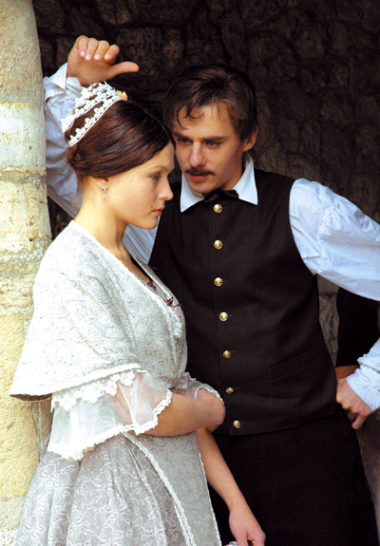

Я лгать не хотел в этом даже себе! Не для того, чтобы матери помочь, я убил – вздор! Не для того я убил, чтобы, получив средства и власть, сделаться благодетелем человечества. Вздор! Я просто убил; для себя убил, для себя одного: а там стал ли бы я чьим-нибудь благодетелем или всю жизнь, как паук, ловил бы всех в паутину и из всех живые соки высасывал, мне, в ту минуту, всё равно должно было быть!..
И не деньги, главное, нужны мне были, Соня, когда я убил; не столько деньги нужны были, как другое… Я это всё теперь знаю… Пойми меня: может быть, тою же дорогой идя, я уже никогда более не повторил бы убийства. Мне другое надо было узнать, другое толкало меня под руки: мне надо было узнать тогда, и поскорей узнать, вошь ли я, как все, или человек? Смогу ли я переступить или не смогу! Осмелюсь ли нагнуться и взять или нет? Тварь ли я дрожащая или право имею…
Такова была моя участь с самого детства. Все читали на моем лице признаки дурных чувств, которых не было; но их предполагали — и они родились. Я был скромен — меня обвиняли в лукавстве: я стал скрытен. Я глубоко чувствовал добро и зло; никто меня не ласкал, все оскорбляли: я стал злопамятен; я был угрюм, — другие дети веселы и болтливы; я чувствовал себя выше их, — меня ставили ниже. Я сделался завистлив. Я был готов любить весь мир, — меня никто не понял: и я выучился ненавидеть.
Никогда, никогда не женись, мой друг; вот тебе мой совет, не женись до тех пор, пока ты не скажешь себе, что ты сделал все, что мог, и до тех пор, пока ты не перестанешь любить ту женщину, какую ты выбрал, пока ты не увидишь ее ясно, а то ты ошибешься жестоко и непоправимо. Женись стариком, никуда не годным... А то пропадет все, что в тебе есть хорошего и высокого. Все истратится по мелочам.
| Писатель | Достоевский Ф.М. | Лермонтов М.Ю. | Толстой Л.Н. |
| Родился | 11 ноября 1821 - 9 февраля 1881 | 15 октября 1814 - 27 июля 1841 | 9 сентября 1828- 20 ноября 1910 |
| Умер | |||
| Прожили лет | 60 лет | 27 лет | 82 года |
| В среднем | 53 года | ||